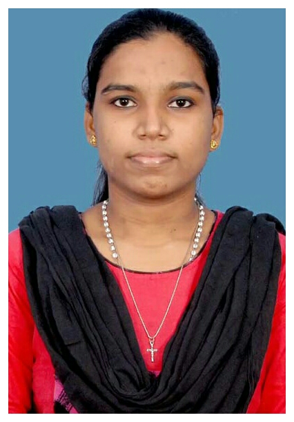

Rubeena Rozario

Summary
To succeed in an environment of growth and excellence and earn a job which provides me job satisfactionand self-development and help me improve my technical skills and achieve personal as well as organizational goals.
Education
Work Experience
Centrado Tech
Product Development Engineer | 21 June, 2021 - Present
- Designing and developing STEAM products for the educators and students.
- Working with various electric, electronic devices, microprocessors and microcontrollers.
- Assist troubleshooting of hardware and software.
- Collaborate with other developers to update the products and create new features for the same.
- Working with wordpress for website maintenance and updation.
Skills
- Embedded systems
- IOT
- Robotics
- Programming languages(C,C++,Python,html)
- 3D printing
- Design
- Product testing
- Time and stress management
Projects
- Self-Charging System for Electric Prosthetic Leg
- Amphibious Trash Collector
Others
Contact Me